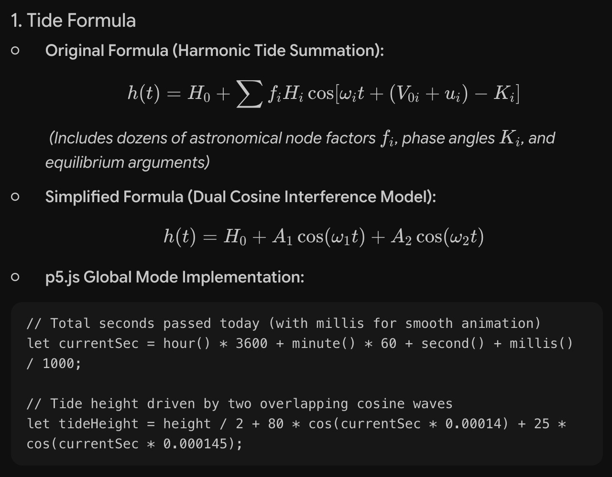
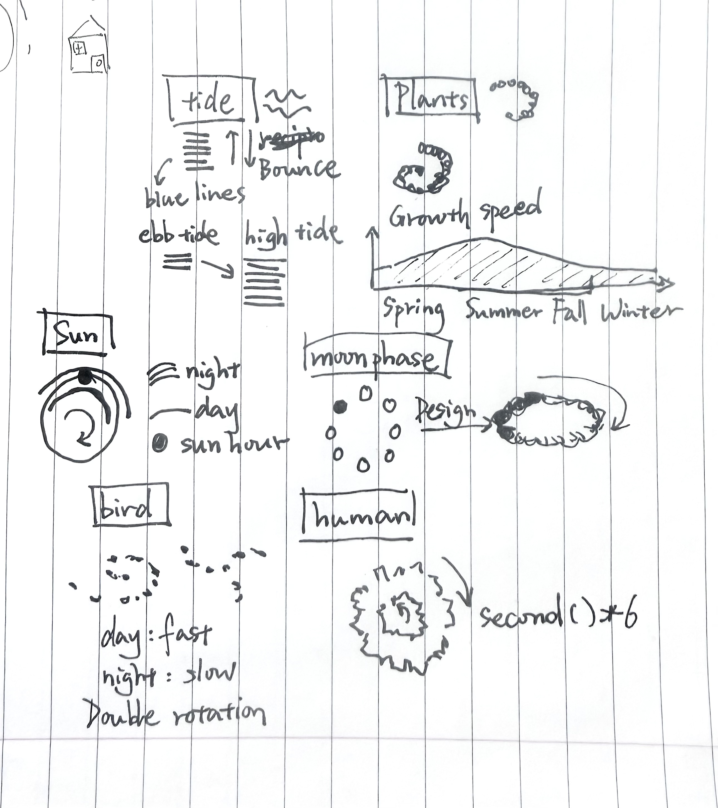

For this week’s design, I wanted to think about time outside of a normal human clock. Time is a system created by humans, but many of our ideas of time originally came from nature, like the sun, moon, tides, seasons, and other natural rhythms. It combines several natural clocks. The plant grows at different speeds depending on the season, the tide changes with the tidal cycle, the moon shows its current phase, the bird changes its flying speed between day and night, and the sun clock show the daily cycle of sunrise and sunset. I translate those rhythms into simple shapes. Instead of using nature to measure human time, I want to use human time(second, hour, day, month, year ) as a way of looking at nature.
Plus, the black background can help the clock blend better with the environment when projected.
AI usage declaration: The formulas for the tide cycle and sun cycle are quite complex, so I used AI to help me understand the logic behind them and simplify them in mathematics(math is so hard), so I can rebuild it with coding by myself

